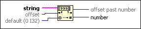

Decimal String To Number Function
Owning Palette: String/Number Conversion Functions
Requires: Base Development System
Converts the numeric characters in string, starting at offset, to a decimal integer and returns it in number.
The connector pane displays the default data types for this polymorphic function.
If you want the function to return a 64-bit integer output, you must wire a 64-bit integer to the default input.

 Add to the block diagram Add to the block diagram |
 Find on the palette Find on the palette |